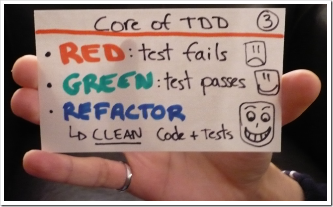
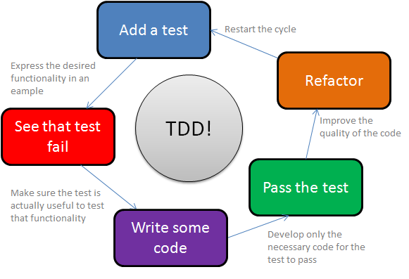
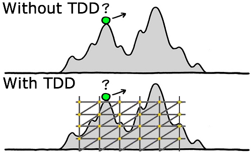
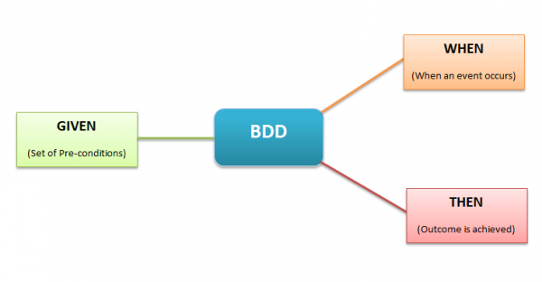
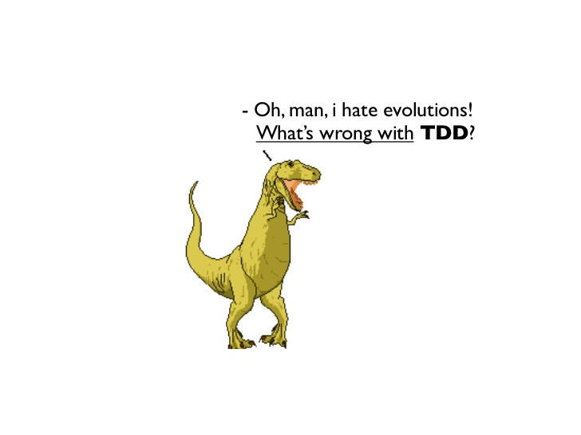

TDD - BDD
The evolution
.jpg)
$ whoami
- web developer en crononauta
- twitter: @neoshadybeat
- Drupal newbie
- Symfony2 lover
- Android lover
- Movidas dipatcher
- http://about.me/cayetano.soriano
Como desarolladores, para verificar el buen comportamiento de nuestro programa, necesitamos testearlos
preferiblemente automatizados
ó en su defecto
¿Qué es TDD?
Desarrollo guiado por pruebas (test-driven development).
Es un metodología de desarrollo ágil.


¿Qué conseguimos con esto?
- Keep It Simple, Stupid (KISS)
- Don't repeat yourself (DRY)
- Evitar dolores de cabeza por bugs
- Maximizar la productividad
- Maximizar la calidad de nuestro código
- Los programadores que utilizan el desarrollo guiado por pruebas en un proyecto virgen encuentran que en raras ocasiones tienen la necesidad de utilizar el depurador o debuger.
- Puede proporcionar un gran valor añadido en la creación de software, produciendo aplicaciones de más calidad y en menos tiempo.
- Al comenzar por un test, estamos adelantado trabajo y tomando decisiones sobre el resultado.
Inconvenientes:
- Aprendizaje de aplicación de la metodología.
- No es fácil de debugear
- puede no ser bastante explicativo

¿cómo podeis hacer TDD?
Con cualquier xunit
Escribimos el test:
public void testSuma() {
assertEquals(5, Matematicas.suma(2,3));
}Desarrollamos el código suficiente para que se pueda realizar el test:
public class Matematicas {
public static int suma (int a, int b) {
return 0;
}
}
Hacemos que lo pase el código suficiente para que pase el test:
public class Matematicas {
public static int suma (int a, int b) {
return a+b;
}
}
¿Qué es BDD?
Si buscas en google ...
- Obviamente no es esto (Body dysmorphic disorder)
- Behavior-driven development
- Es un proceso de desarrollo del software basado en el test-driven development (TDD)

Es una evolución del TDD

Mismo vocabulario
- Para Testers
- Para Analistas
- Para Developers
- Para el cliente

Misma metodología
¿Dónde está el cambio?
- Uso de historias de comportamiento (story's behaviour)
- No se basa en test, sino es especificaciones
- En vez de caso de test (test case) uso de contextos (context)
- En vez de assert, expect
¿Qué es una historia?
- Given something
- when a event occurs
- then that will happen
¿Cómo contamos estas historias?
Gherkin
Feature: Some terse yet descriptive text of what is desired
In order to realize a named business value
As an explicit system actor
I want to gain some beneficial outcome which furthers the goal
Scenario: Some determinable business situation
Given some precondition
And some other precondition
When some action by the actor
And some other action
And yet another action
Then some testable outcome is achieved
And something else we can check happens too
Scenario: A different situation
...
¿Cómo hacer BDD?
- Mocha para javascript
- Behat para php
- Cucumber para ruby
- freshen para python
- java JBehave
- ...
Ejemplo con behat
Creamos la feature
#api_login.feature
Feature: Con privilegios de usar la api
Comprueba que el usuario tiene privilegios para acceder a la API
Scenario: Sin acceso a la API, API key no válida
Given Una API key "12345"
When Pido un recurso de la API protegido
Then Debe devolver status 401
/**
* @Given /^Una API key "([^"]*)"$/
*/
public function unaApiKey($apikey)
{
throw new PendingException();
}
/**
* @When /^Pido un recurso de la API protegido$/
*/
public function pidoUnRecursoDeLaApiProtegido()
{
throw new PendingException();
}
/**
* @Then /^Debe devolver status (\d+)$/
*/
public function debeDevolverStatus($httpStatusCode)
{
throw new PendingException();
}
/**
* @Given /^Una API key "([^"]*)"$/
*/
public function unaApiKey($apikey)
{
$this->apikey=$apikey;
}
/**
* @When /^Pido un recurso de la API protegido$/
*/
public function pidoUnRecursoDeLaApiProtegido()
{
$url = $this->parameters['base_url'].$this->get('router')->generate('api_user_validate')."?apikey=".$this->apikey;
$browser = $this->get('buzz');
$response = $browser->get($url);
$this->httpStatusCode = $response->getStatusCode();
}
/**
* @Then /^Debe devolver status (\d+)$/
*/
public function debeDevolverStatus($httpStatusCode)
{
assertEquals($this->httpStatusCode,$httpStatusCode);
}
¿Cómo practico TDD/BDD, lecturas recomendadas?